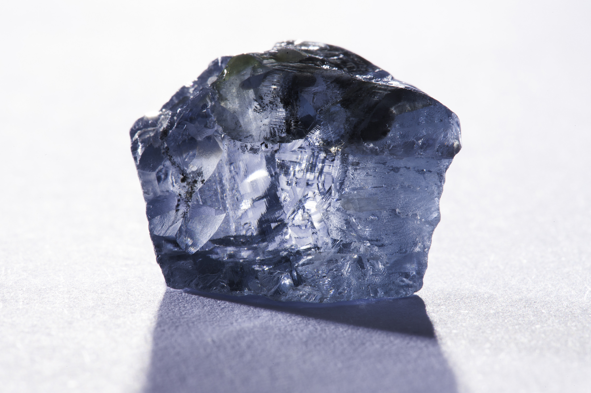
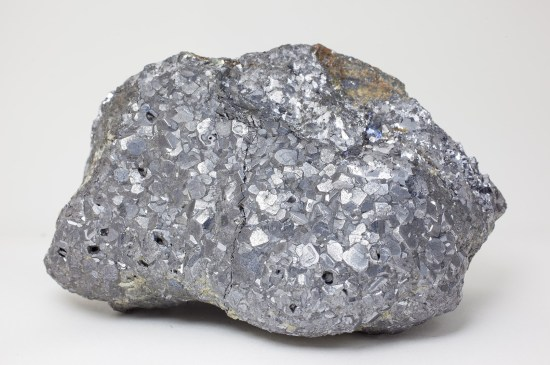
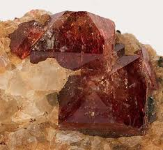
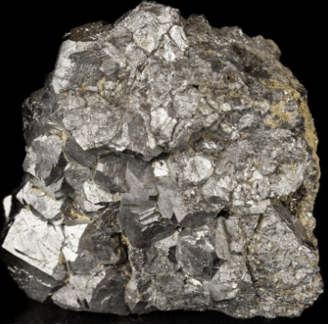
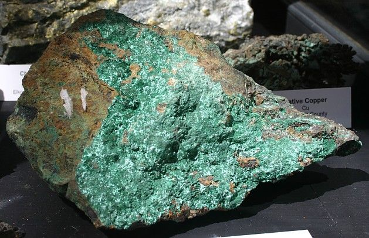

| The mineral | How they are used | How they are found | How they are formed | Image |
|---|---|---|---|---|
| Bauxite (Aluminium Ore) | The production of aluminium which is used in many things. | Aluminium is found inside of igneous rocks, it is mined by open-cut mining. | Bauxite is formed by in the wearhering of other aluminous rocks. |  |
| Iron Ore | The production of iron which is used in the production of steel. | Iron is found inside of sedimentary rocks, it is mined primarily in open-cut mines. | All iron ore mainly form at one time when oranisums in the ocean started to photosynthesize and created oxyen which reacted with other elements createing the iron. |  |
| Lithium | Used for the production batteries. | Lithium is found inside of sedimentary rocks, it is mined primarily by hard rock mining. | Lithium is not a naturaly occurring element as which it must be extracted from of the substances such as spodumene |  |
| Gold | Used for jewlery | Gold is often found inside of quartz, it is mined by hard rock mining. | Gold is created under the earths crust. The magma melts the gold and it gathers under the crust before being pushed up. |  |
| Lead | Used to be used in many things, now used in radiation protection, weights on car wheels, wirering, and aummunition. | Lead is usually found inside of Lead orebodies, it is mined by primarily mined by hard rock mining. | Lead is extracted from galena, which comes fro the ground. |  |
| Diamond | Dimond is used in jewlery and drills and other industrial purposes. | Diamonds are found inside of Kimberlite rocks or alluvial deposits. Diamonds are usually mined open-cut or by hard rock mining. | Germany |  |
| Uranium | Uranium in used in nuclear power. | Uranium is found inside of igneous, metamorphic or sedimentary rock. There are lots of techniques to mine Uranium including: Open pit, Underground, Heap leaching, In-situ leaching and seawater recovery. | Earths uranium was fromed in supernovas and the merger of nutronstars, it became enriched in atomic decay. y |  |
| Zinc | Used in the production od titaniumsed in the production od titanium | Zinc is found in sedimentary rocks, it is mainly mined by hard rock mining. | Germany |  |
| Ilmenite | Use to galvanise things and in rubber and plastic. | Ilmenite is found in igneous rocks, it is commonly mined by excavating. | Ilmenite is formed in the cooling of magma far under the ground. |  |
| Zircon | Zircon is used in the production of Zirconium. | Zircon is found in igneous and metamorphic rocks, it is commonly mining or dredging zircon-rich sediments. | Zircon is formed over millions of years when other rocks ar eroded and small amounts of zircon are released. |  |
| Rutile | Used in the production of titanium and pigments. | Mexico | Germany |  |
| Black Coal | Black coal, opposed to brown coal, is a high energy coal which creates less emmisions than brown coal. | Mexico | Germany |  |
| Silver | Jewlary, table wear, mirrors and early photography. | Mexico | Germany |  |
| Cobalt | Used in magnets and jet turbines. | Mexico | Germany |  |
| Copper | Used in wires. | Mexico | Germany |  |
Leading mining companies in Australia
and what they mine.
BHP Billiton
Iron, steel, copper, silver, aluminum, oil, and gas.
Newcrest
Gold.
Rio Tinto
Aluminium, iron ore, copper, dimond.
Bibliography
Bauxite | ore. (2019). Retrieved 12 November 2019, from https://www.britannica.com/science/bauxite
King, H. (2019). Iron Ore: Sedimentary Rock - Pictures, Definition & More. Retrieved 12 November 2019, from https://geology.com/rocks/iron-ore.shtml
World Lithium Supply. (2019). Retrieved 12 November 2019, from http://large.stanford.edu/courses/2010/ph240/eason2/
Australian mineral facts | geoscience australia. (n.d.). Retrieved from https://www.ga.gov.au/education/classroom-resources/minerals-energy/australian-mineral-facts
King, H. M. (n.d.). Ilmenite: An ore of titanium | uses and properties. Retrieved from https://geology.com/minerals/ilmenite.shtml
Bhp billiton | australian company. (n.d.). Retrieved from https://www.britannica.com/topic/BHP-Billiton
How diamonds are formed | cape town diamond museum. (n.d.). Retrieved from https://www.capetowndiamondmuseum.org/about-diamonds/formation-of-diamonds/